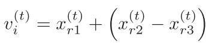
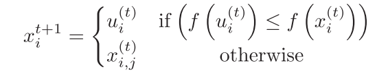

SendEmployedBees: Stochastic Long-Distance Exploration of Design Space
Created on May 8, 2017 By Parsa Beheshti
From "Memetic Artificial Bee Colony Algorithm for Large-Scale Global Optimization" by Fister et al.
Contents
Function I/O
Input:
- solutionDB: Current generation data structure for candidate solutions
- objValDB: Current generation data structure for objective function values
- CR: Crossover constant passed down from main script; Will be used to determine field values of trial solution to be compared for fitness
Output:
- solutionDB:Next generation data structure for candidate solutions
- objValDB: Next generation data structure for candidate solutions
Source Code
function [solutionDB, objValDB] = sendEmployedBees (solutionDB, objValDB, CR)
Equation in the mutation loop given by,

v = zeros(numBees,numParam);
for i=1:numBees
randChoice = randSample(numBees,3);
v(i,:) = solutionDB.params(randChoice(1,1),:) + ( solutionDB.params(randChoice(1,2),:) - solutionDB.params(randChoice(1,3),:));
end
Afterwards, the trial set is chosen using the logic given by,

randomMatrix = rand(length(solutionDB), size(solutionDB(1).params,2));
decMatV = randomMatrix <= CR ;
decMatOrig = detMatV ~= 1;
After that, we extract a matrix of all the candidate solutions from solutionDB.
sampleData = reshape([solutionDB.params], size(solutionDB(1).params,2), length(solutionDB))';
Trial solution created from crossover comparison between mutated and initial solution.
trial = (decMatV .* v) + (decMatOrig .* sampleData);
Evaluates the objective functions given parameters from each bee using data from trial solutions and current generation (original) solution.
objFunc must be defined in a separate script containing the objective function that will be evaluated using column data from sampleData.
[trialVal] = objFunc(trial);
[origVal] = objFunc(trial);
Assuming a minimum value is desired for each case, this returns a 1 for each case that the trial solution presents a better fitness.
decisionFit = trialVal <= origVal;
Horizontal stacking of column vector to address matrix dimension compatibility.
decisionFit = repmat(decisionFit,1,size(solutionDB(1).params,2));
decisionOrig = decisionFit ~= 1;
Next generation of candidate solutions created using fitness decision data whose logic is given by,

nextGenP = (trial .* decisionFit) + (sampleData .* decisionOrig);
Next generation of objective function values
nextGenV = (trialVal .* decisionFit(:,1)) + ( sampleData .* decisionOrig(:,1));
Assigns the next generation of parameters and objective function's value
This is okay because we can make the assumption that the initial set of candidate solutions are not at an optima, and don't need an intial evaluation of the objective function.
for i=1:length(solutionDB)
solutionDB(i).params = nextGenP(i,:);
objValDB(i).objVal = nextGenV(i);
- The first if deals with generation 0's value and assigning it as best; must be done or there will never be a best generation.
- The second if deals with resetting the scouting counter and assigning the best objective value should it be better than the existing one.
- The else deals with adding to the scout counter if no better value is found for that generation, where the scout function will kick in and assign a new random point. This deals with lost points.
if objValDB(i).best == 0 objValDB(i).objVal = nextGenV(i); elseif objValDB(i).objVal >= nextGenV(i) objValDB(i).best = nextGenV(i); objValDB(i).scouted = 0; else objValDB(i).scouted = objValDB(i).scouted + 1; end
end
end